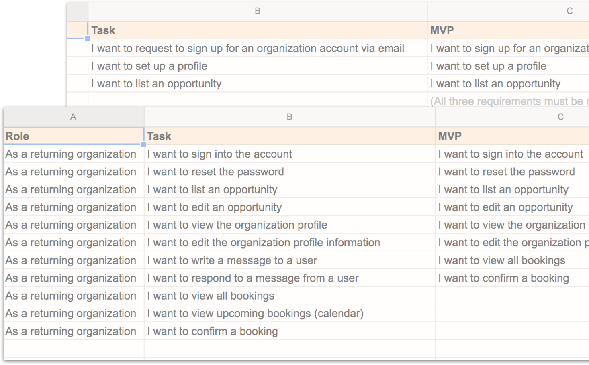

Distant locales are more accessible than ever. Modern advancements present us with an opportunity to learn more about different cultures and to move forward with greater global knowledge. We can begin to realize what connects us as people and as a global community. Free Bird facilitates connectivity by giving users direct access to unique, immersive travel experiences.
With a clear objective for Free Bird established, it was time to address a number of questions. What is the best way for people to connect with local communities? Is it possible to immerse yourself within a short time? What types of experiences are people looking for? What is the most intuitive way to facilitate these experiences? It was necessary to research users’ current travel behaviors and try to pinpoint opportunities for improvement and what needs remained unmet. It was also important to determine what activities truly enrich a travel experience.
After conducting a detailed user survey a number of responses offered key insights into advantages Free Bird could potentially provide:
94%
Would consider volunteering on future trips
67%
Don’t always know the best way to engage with local communities
90%
Enjoy interacting with local communities when traveling
Overall, the user is looking for a unique opportunity, however, they cannot fully explore the potential of their travel destinations. The survey exhibited that there is an opportunity for Free Bird to offer users a new service and an enriched travel experience they currently have not been exposed to.
It was pertinent to make Free Bird a valuable resource for different types of travelers. From the survey, two main user personas emerged. For the eager explorer, a seasoned globetrotter, Free Bird enables them to expand their already diverse connections. They will also enjoy the convenience and added accessibility. For the curious discoverer who wants to connect but perhaps isn’t sure of the best way how, Free Bird will open new possibilities and directions. With durations ranging from 1 day to 1 month, this app is both for people taking a short trip and for those traveling for an extended time.
curious — discover
Smith H.
Smith H. has traveled to a number of different countries, however, has never stayed longer than two weeks at any one destination. He likes to partake in a variety of activities while traveling, ranging from relaxing on the beach to trying new cuisines. He likes experiencing new things and is very interested to get to know his surroundings. He travels for adventure, relaxation, as well as, to see friends and family.
GOALS
FRUSTRATIONS
eager — explore
Claudia B.
Claudia B. is a seasoned traveler and has visited a multitude of different countries. She has a broad network of international friends and colleagues. Having volunteered in the past, she does not hesitate to jump into the local scene and get involved. She likes to travel for at least a few weeks at a time whenever possible. Claudia is driven by new possibilities and adventure. She is always looking to broaden her perspectives and knowledge.
GOALS
FRUSTRATIONS
The next step was to create user stories and flows in Google Drive so I could identify the main objectives and develop an MVP. I wanted users to be able to communicate and book experiences directly with organizations, therefore there would need to be a separate flow. I knew that I would develop the interactive prototype for users booking experiences but I felt to truly have an understanding of how the app would function I wanted to conceptualize both ends of the process. Therefore, I developed user stories for new and returning organizations to make sure the app would enable their main objectives as well.
KEEPING IT LIGHT
After hand-sketching some basic layouts, low fidelity wireframes were developed in Sketch. At this point Free Bird was moving from the conceptual phase to existing on a visual plane. I started making many small decisions to allow users to accomplish all of their objectives intuitively and effortlessly. I wanted the Free Bird user to feel excited about the experiences they are about to embark on, I didn’t want them to have to shift their focus or encounter any subtle annoyances.
FOCUSING ON FUNDAMENTALS
Once I began drawing out the wireframes, I was able to have a better idea of how these options would affect the overall user experience. For instance, I was debating whether or not to include social logins. They are included in some user flows, however, I decided to not include them in the initial version of Free Bird. I wanted the first version to focus on the most vital functions and to keep users focused specifically on the Free Bird initiative. Therefore I felt it would be stronger not to introduce other brands or logos in an overt manner.
OPTIMIZING FACILITY
While browsing, the user has the option to save an experience. I initially thought I would include these “saved experiences” within “experiences” in the bottom nav. I later decided that because I wanted users to be able to save experiences quickly and easily to refer back to, I wanted the “Saved” icon to be obvious and convenient. Therefore, I included it as its own icon in the nav because I felt that it was a significant function and if users needed to click around to find it, it defeated the purpose of having it in the first place.
When designing the logo, I initially looked to the simple, silhouetted forms of hieroglyphics for inspiration. I liked the concept of a pictorial language, figures representing specific meanings. It was also important for the logo to have a unifying, international reference, yet remain indefinite to not focus on any one area. Although not literal representations of the glyphs, the logo is a combination of three symbols which convey the multi-dimensional message of Free Bird.
The Bird
Symbol of freedom and ones power to choose their own destiny
The Eye
Symbol of the seer, the one who is witness to the experience
The Path
Symbol of the journey one takes to achieve greater awareness
In terms of typefaces I wanted something to mimic the vintage feel of a typewriter so I chose a slab-serif. I used Sanchez for headlines and paired it with Gibson. I felt their geometric features and similar x-heights created a nice harmony.
The color palette was driven by the photo styling of the app. The photos are high saturation and exhibit a myriad of earth tones. I wanted the app to have an overall feeling of warmth and so I chose hues to express this.
High-fidelity mockups were created and finalized in Sketch and then an interactive prototype was developed in Invision to exhibit the experience of Free Bird in a realistic manner. At this stage layouts and design elements were refined. It was important to allow the subtleties of the design hierarchy to guide the user through interactions.
Click here to view the prototype in Invision